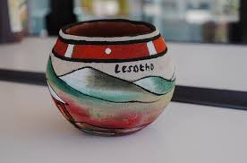

Lefitsoana

A traditional Basotho clay pot,often referred to as nkho.Alos a decorative or functional clay pot..seem more

A traditional Basotho clay pot,often referred to as nkho.Alos a decorative or functional clay pot..seem more